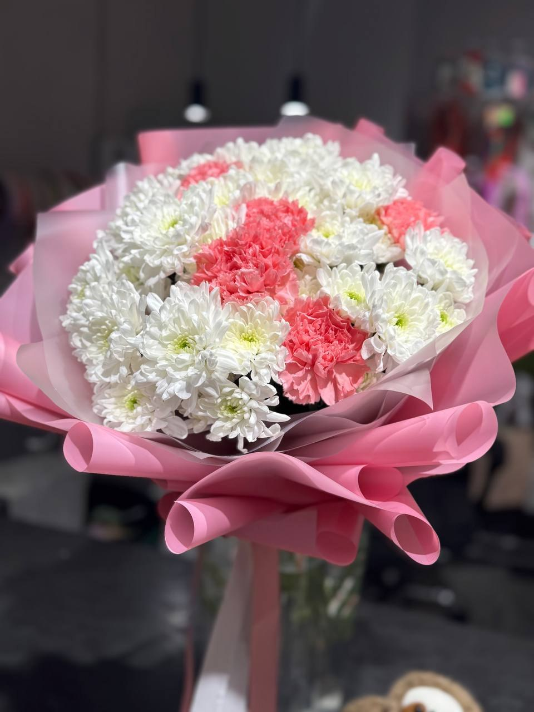
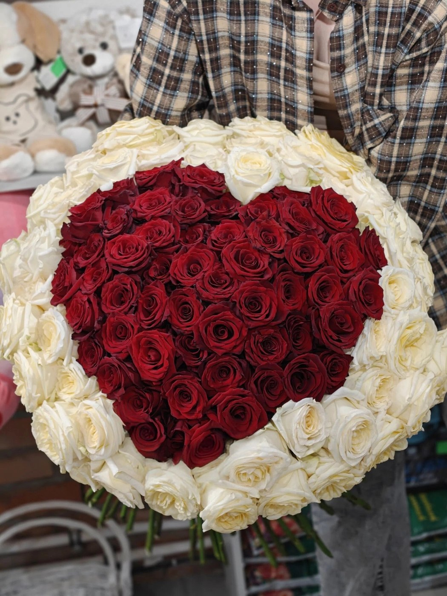

Доставка
Адрес, время и стоимость доставки согласуйте при заказе.
Стоимость уточняйтеЦветочный Переулок · Рязань
Букеты и композиции в Цветочном Переулке. Для важных встреч и тёплых слов.
Рязань, ул. Зубковой, 16, корп. 1
Ежедневно, 09:00–22:00


С вниманием к вашим чувствамВыберите своё настроение
Подберём вариант под повод и бюджет. Свяжитесь с магазином, чтобы узнать актуальное предложение.
Опишите повод, любимые цветы и комфортный бюджет. Доступные варианты и итоговую стоимость магазин подскажет перед заказом.
Публичный прайс в карточке магазина не опубликован. Уточните цены и наличие по телефону.
Узнать стоимость ↗Цена относится только к указанному товару и его описанию. Если количество не указано, уточните единицу продажи у магазина. Сведения проверены 10.11.2026. Цены и ассортимент могут измениться. Прайс на Яндекс Картах ↗
Больше, чем цветы
Выберите, что нужно для вашего случая. Детали заказа и стоимость согласуйте с магазином.
Адрес, время и стоимость доставки согласуйте при заказе.
Стоимость уточняйтеДоговоритесь о составе заказа и удобном времени визита.
Стоимость уточняйтеОбсудите палитру, цветы и оформление вашего события.
Стоимость уточняйтеМатериалы, оформление и стоимость подскажут в магазине.
Стоимость уточняйтеДополните цветы личным пожеланием. Наличие и цену уточняйте.
Стоимость уточняйтеВыберите цвета и повод. Состав и стоимость согласуйте с магазином.
Стоимость уточняйте
Будем знакомы
Букеты и композиции в Цветочном Переулке. Для важных встреч и тёплых слов.
Расскажите, кого хотите порадовать, какие оттенки вам нравятся и какой бюджет вы планируете. Состав, упаковку и время получения обсудите с сотрудниками.
Поближе к красоте
Загляните в магазин и найдите настроение для следующего заказа.
Фотографии из карточки магазина на Яндекс Картах. Это примеры работ и атмосферы; текущее наличие уточняйте.
Опыт покупателей
5,0 из 5 · 90 оценок на Яндекс Картах.
Ниже — краткие пересказы выбранных отзывов со ссылками на оригиналы.
Постоянная покупательница отмечает помощь с композицией, ценой и уходом за цветами.
Автору нравятся необычные букеты, общение с продавцами и возможность доставки.
Покупательница из другого города благодарит за помощь с букетом и доставкой сюрприза подруге.
Автор рассказывает об оперативном выполнении необычного заказа по образцу из фильма.
Перед заказом
Позвоните по указанному номеру и обсудите с магазином состав, бюджет и время получения. Заказ считается согласованным после подтверждения сотрудником.
Фотографии показывают примеры из карточки магазина. Сезонность и наличие могут влиять на состав. Попросите подтвердить цветы и упаковку перед заказом.
Цены взяты из опубликованного прайса на дату проверки. Итог зависит от выбранного состава, размера, упаковки и доставки. Подтвердите стоимость у магазина до оплаты.
Рязань, ул. Зубковой, 16, корп. 1. Используйте кнопку «Построить маршрут» ниже. Режим работы: Ежедневно, 09:00–22:00.
До встречи
Рязань, ул. Зубковой, 16, корп. 1
Ежедневно, 09:00–22:00